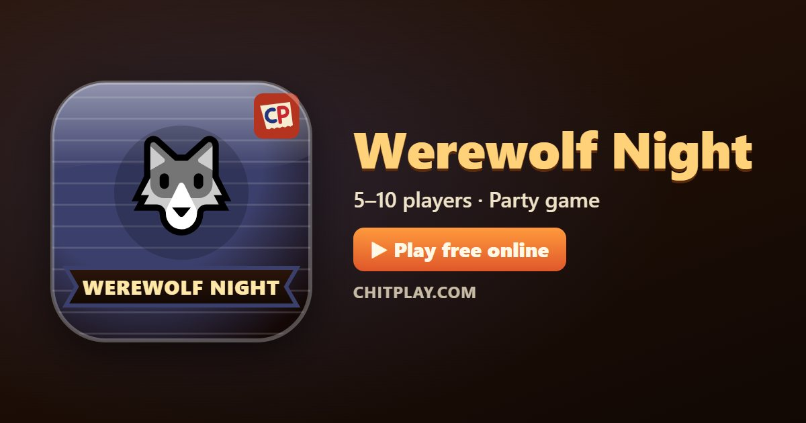

Werewolf Night: play free online and learn the rules
- 👥 5–10 players
- ⏱ 10–20 minutes
- 👤 guest play
- 🌍 online opponents
- 🤖 computer players
- 📶 friends nearby
- 🆓 free, no sign-up
Werewolf Night is ChitPlay's take on the classic village party game of hidden roles. Everyone secretly gets a role. A werewolf or two hide among the villagers; a Seer can learn the truth about one player each night, and a Doctor can protect one player. Nobody gets hurt: anyone caught simply sits out and watches.

Ways to play Werewolf Night
- 👤 Guest play Start straight away against computer players, no account and no sign-up. Choose 5 to 10 players.
- 🌍 Play online Get matched with real players from around the world. If nobody is free within a few seconds, computer players take the empty seats so you are never left waiting.
- 📶 Friends nearby Open a room, and friends join from their own phones with a 6-digit code or by scanning a QR code. Works on the same Wi-Fi or across the internet.
- 📱 One phone Pass one phone around the table; secrets stay hidden until it is your turn.
- 👀 Watch Let the computer players show you how the game goes before you jump in.
How to play
- Everyone privately reads their secret role: Werewolf, Seer, Doctor or Villager.
- Night: the werewolves pick one player to catch, the Seer picks a player whose role they learn, and the Doctor picks a player to protect.
- Morning: the village learns who was caught in the night, unless the Doctor protected them.
- Day: talk it over in the chat, then everyone still in votes for the player they think is a werewolf. The player with the most votes leaves and their role is shown. A tie means nobody leaves.
- Night falls again, and the game goes on until one side wins.
Scoring
Everyone on the winning side wins: the werewolves together, or the Seer, the Doctor and the Villagers together. With nine or more players there are two werewolves.
Who wins
The village wins as soon as every werewolf has been voted out. The werewolves win when there are as many of them as everyone else.
Tips
- As the Seer, don't reveal yourself too early: the werewolves will come for you next.
- As a werewolf, vote with the crowd and never defend another werewolf too hard.
- Watch who keeps voting against the players who were caught at night.
Questions
How many players do I need?
At least five. Computer players fill any empty seats, so you can play alone, with friends on one phone, nearby or online.
Is anyone really hurt?
No. Being caught only means you sit out the rest of the game and watch.
Can the Doctor protect themselves?
Yes, any player still in the game, including themselves.
How do you play Werewolf Night online with friends?
Open Werewolf Night on ChitPlay and choose Nearby Play. One phone opens a room and gets a 6-digit code; your friends type the code or scan the QR code on their own phones and join. No sign-up is needed.
Can I play Werewolf Night without downloading anything?
Yes. Werewolf Night runs in the web browser on phones, tablets and computers. Open www.chitplay.com, pick Werewolf Night and play as a guest.
How many players can play Werewolf Night?
Werewolf Night on ChitPlay is for 5 to 10 players. Computer players fill any empty seats, so you can always start a game.
Is Werewolf Night free to play?
Yes, Werewolf Night is completely free on ChitPlay. There is no real money, betting or prizes, and points have no value outside the game.
Can I play Werewolf Night against the computer?
Yes. Choose Play and ChitPlay's computer players take the other seats, at an easy, normal or hard level.
More games
- Who Is the Spy?
- Truth or Dare
- Riddle Chits
- Majority Vote
- Consequences
- Cops and Robbers (Raja Rani Chor Police)
- All games
Points in this game have no value. ChitPlay involves no real money, betting or prizes.